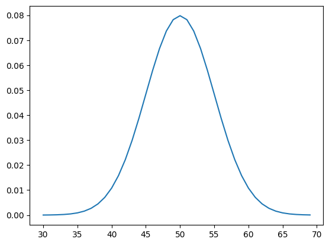
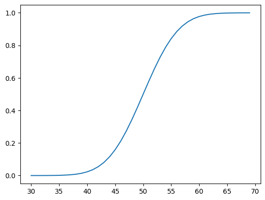
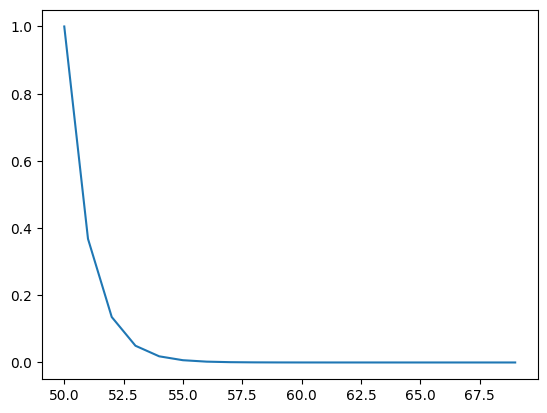
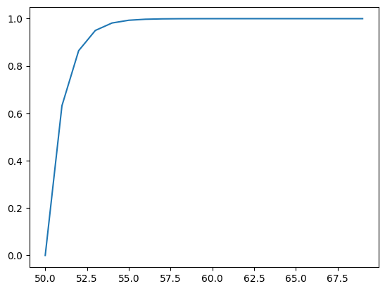
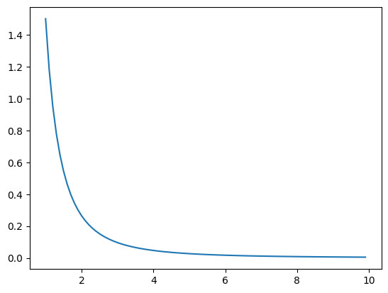
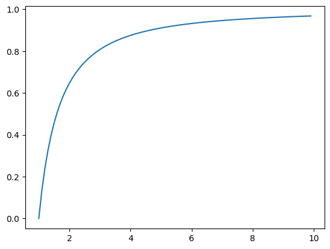
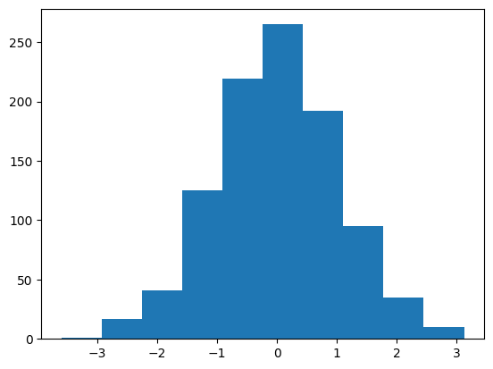
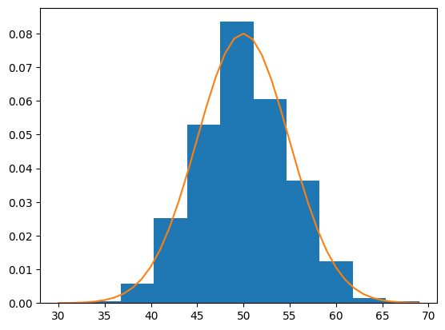
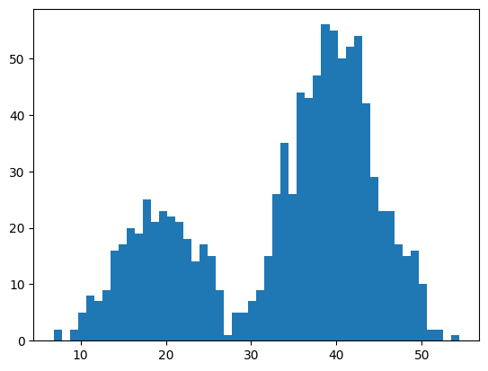

The structure and type of the probability distribution varies based on the properties of the random variable, such as continuous or discrete, and this, in turn, impacts how the distribution might be summarized or how to calculate the most likely outcome and its probability.
Random variables in probability have a defined domain and can be continuous or discrete.
Probability distributions summarize the relationship between possible values and their probability for a random variable.
Probability density or mass functions map values to probabilities and cumulative distribution functions map outcomes less than or equal to a value to a probability.
Random Variable
A random variable is often denoted as a capital letter, e.g. X, and values of the random variable are denoted as a lowercase letter and an index, e.g. x 1 , x 2 , x 3 . Upper-case letters like X denote a random variable, while lower-case letters like x denote the value that the random variable takes.
The values that a random variable can take is called its domain, and the domain of a random variable may be discrete or continuous.
A discrete random variable has a finite set of states: for example, colors of a car. A random variable that has values true or false is discrete and is referred to as a Boolean random variable: for example, a coin toss. A continuous random variable has a range of numerical values: for example, the height of humans. * Discrete Random Variable. Values are drawn from a finite set of states. * Boolean Random Variable. Values are drawn from the set of {true, false}. * Continuous Random Variable. Values are drawn from a range of real-valued numerical values.
A value of a random variable can be specified via an equals operator: for example, X = T rue. The probability of a random variable is denoted as a function using the upper case P or P r; for example, P (X) is the probability of all values for the random variable X. The probability of a value of a random variable can be denoted P (X = T rue), in this case indicating the probability of the X random variable having the value True.
Probability Distribution
A probability distribution is a summary of probabilities for the possible values of a random variable. As a distribution, the mapping of the values of a random variable to a probability has a shape when all values of the random variable are lined up. The distribution also has general properties that can be measured. Two important properties of a probability distribution are the expected value and the variance. Mathematically, these are referred to as the first and second moments of the distribution. Other moments include the skewness (3rd moment) and the kurtosis (4th moment).
The expected value is the average or mean value of a random variable X. This is the most likely value or the outcome with the highest probability. It is typically denoted as a function of the uppercase letter E with square brackets: for example, E[X] for the expected value of X or E[f (x)] where the function f () is used to sample a value from the domain of X.
The expectation value (or the mean) of a random variable X is denoted by E(X).
The variance is the spread of the values of a random variable from the mean. This is typically denoted as a function V ar; for example, V ar(X) is the variance of the random variable X or V ar(f (x)) for the variance of values drawn from the domain of X using the function f (). The square root of the variance normalizes the value and is referred to as the standard deviation. The variance between two variables is called the covariance and summarizes the linear relationship for how two random variables change together.
Expected Value. The average value of a random variable.
Variance. The average spread of values around the expected value.
Covariance: The variance between two variables is called the covariance and summarizes the linear relationship for how two random variables change together.
Each random variable has its own probability distribution, although the probability distribu- tion of many different random variables may have the same shape. Most common probability distributions can be defined using a few parameters and provide procedures for calculating the expected value and the variance. The structure of the probability distribution will differ depending on whether the random variable is discrete or continuous.
Discrete Probability Distributions
A discrete probability distribution summarizes the probabilities for a discrete random variable. The probability mass function, or PMF, defines the probability distribution for a discrete random variable. It is a function that assigns a probability for specific discrete values. A discrete probability distribution has a cumulative distribution function, or CDF. This is a function that assigns a probability that a discrete random variable will have a value of less than or equal to a specific discrete value.
Probability Mass Function. Probability for a value for a discrete random variable.
Cumulative Distribution Function. Probability less than or equal to a value for a random variable.
The values of the random variable may or may not be ordinal, meaning they may or may not be ordered on a number line, e.g. counts can, car color cannot. In this case, the structure of the PMF and CDF may be discontinuous, or may not form a neat or clean transition in relative probabilities across values. The expected value for a discrete random variable can be calculated from a sample using the mode, e.g. finding the most common value. The sum of probabilities in the PMF equals to one. Some examples of well known discrete probability distributions include: * Bernoulli and binomial distributions. * Multinoulli and multinomial distributions. * Poisson distribution.
The probabilities of dice rolls form a discrete uniform distribution.
The probabilities of coin flips form a Bernoulli distribution.
The probabilities car colors form a multinomial distribution.
Discrete probability distributions are used in machine learning, most notably in the modeling of binary and multiclass classification problems, but also in evaluating the performance for binary classification models, such as the calculation of confidence intervals, and in the modeling of the distribution of words in text for natural language processing. Knowledge of discrete probability distributions is also required in the choice of activation functions in the output layer of deep learning neural networks for classification tasks and selecting an appropriate loss function.
The probability of outcomes for discrete random variables can be summarized using discrete probability distributions.
A single binary outcome has a Bernoulli distribution, and a sequence of binary outcomes has a Binomial distribution.
A single categorical outcome has a Multinoulli distribution, and a sequence of categorical outcomes has a Multinomial distribution.
A discrete random variable is a random variable that can have one of a finite set of specific outcomes. The two types of discrete random variables most commonly used in machine learning are binary and categorical. * Binary Random Variable: x ∈ {0, 1}. A binary random variable is a discrete random variable where the finite set of outcomes is in {0, 1}. * Categorical Random Variable: x ∈ {1, 2, · · · , K}. A categorical random variable is a discrete random variable where the finite set of outcomes is in {1, 2, · · · , K}, where K is the total number of unique outcomes.
The relationship between the events for a discrete random variable and their probabilities is called the discrete probability distribution and is summarized by a probability mass function, or PMF for short. For outcomes that can be ordered, the probability of an event equal to or less than a given value is defined by the cumulative distribution function, or CDF for short. The inverse of the CDF is called the percentage-point function and will give the discrete outcome that is less than or equal to a probability.
PMF: Probability Mass Function, returns the probability of a given outcome.
CDF: Cumulative Distribution Function, returns the probability of a value less than or equal to a given outcome.
PPF: Percent-Point Function, returns a discrete value that is less than or equal to the given probability.
There are many common discrete probability distributions. The most common are the Bernoulli and Multinoulli distributions for binary and categorical discrete random variables respectively, and the Binomial and Multinomial distributions that generalize each to multiple independent trials.
Binary Random Variable: Bernoulli Distribution.
Sequence of a Binary Random Variable: Binomial Distribution.
Categorical Random Variable: Multinoulli Distribution.
Sequence of a Categorical Random Variable: Multinomial Distribution.
There are additional discrete probability distributions that you may want to explore, including the Poisson Distribution and the Discrete Uniform Distribution.
Bernoulli Distribution
The Bernoulli distribution is a discrete probability distribution that covers a case where an event will have a binary outcome as either a 0 or 1. x ∈ {0, 1}
A Bernoulli trial is an experiment or case where the outcome follows a Bernoulli distribution.Some common examples of Bernoulli trials include: * The single flip of a coin that may have a heads (0) or a tails (1) outcome. * A single birth of either a boy (0) or a girl (1).
A common example of a Bernoulli trial in machine learning might be a binary classification of a single example as the first class (0) or the second class (1). The distribution can be summarized by a single variable p that defines the probability of an outcome 1. Given this parameter, the probability for each event can be calculated as follows:
P (x = 1) = p
P (x = 0) = 1 − p
Binomial Distribution
The repetition of multiple independent Bernoulli trials is called a Bernoulli process. The outcomes of a Bernoulli process will follow a Binomial distribution. As such, the Bernoulli distribution would be a Binomial distribution with a single trial. Some common examples of Bernoulli processes include: * A sequence of independent coin flips. * A sequence of independent births.
The performance of a machine learning algorithm on a binary classification problem can be analyzed as a Bernoulli process, where the prediction by the model on an example from a test set is a Bernoulli trial (correct or incorrect). The Binomial distribution summarizes the number of successes k in a given number of Bernoulli trials n, with a given probability of success for each trial p.
We can demonstrate this with a Bernoulli process where the probability of success is 30% or P (x = 1) = 0.3 and the total number of trials is 100 (k = 100).
This can be achieved via the binomial() NumPy function. This function takes the total number of trials and probability of success as arguments and returns the number of successful outcomes across the trials for one simulation.
# example of simulating a binomial process and counting successfrom numpy.random import binomial# define the parameters of the distributionp =0.3#probability of successn =100# Total number of trials# run a single simulationsuccess = binomial(n, p)print(f'Total Success is: {success}')
Total Success is: 28
We can calculate the moments of this distribution, specifically the expected value or mean and the variance using the binom.stats() SciPy function.
from scipy.stats import binommean, var,_,_ = binom.stats(n, p, moments='mvsk')print(f'Mean={mean}, Variance={var}')
Mean=30.0, Variance=21.0
We can use the probability mass function to calculate the likelihood of different numbers of successful outcomes for a sequence of trials, such as 10, 20, 30, to 100. We would expect 30 successful outcomes to have the highest probability.
Running the example defines the binomial distribution and calculates the probability for each number of successful outcomes in [10, 100] in groups of 10. The probabilities are multiplied by 100 to give percentages, and we can see that 30 successful outcomes has the highest probability at about 8.6%.
dist = binom(n, p)for n inrange(10, 110, 10):print(f'Probability of {n} success is: {dist.pmf(n)*100:0.3f}%')
Probability of 10 success is: 0.000%
Probability of 20 success is: 0.758%
Probability of 30 success is: 8.678%
Probability of 40 success is: 0.849%
Probability of 50 success is: 0.001%
Probability of 60 success is: 0.000%
Probability of 70 success is: 0.000%
Probability of 80 success is: 0.000%
Probability of 90 success is: 0.000%
Probability of 100 success is: 0.000%
Running the example prints each number of successes in [10, 100] in groups of 10 and the probability of achieving that many success or less over 100 trials. As expected, after 50 successes or less covers 99.999% of the successes expected to happen in this distribution.
for n inrange(10, 110, 10):print(f'Probbaility of less than {n} success is: {dist.cdf(n)*100:0.3f}%')
Probbaility of less than 10 success is: 0.000%
Probbaility of less than 20 success is: 1.646%
Probbaility of less than 30 success is: 54.912%
Probbaility of less than 40 success is: 98.750%
Probbaility of less than 50 success is: 99.999%
Probbaility of less than 60 success is: 100.000%
Probbaility of less than 70 success is: 100.000%
Probbaility of less than 80 success is: 100.000%
Probbaility of less than 90 success is: 100.000%
Probbaility of less than 100 success is: 100.000%
Multinoulli Distribution
The Multinoulli distribution, also called the categorical distribution, covers the case where an event will have one of K possible outcomes.
x ∈ {1, 2, 3, · · · , K}
It is a generalization of the Bernoulli distribution from a binary variable to a categorical variable, where the number of cases K for the Bernoulli distribution is set to 2, K = 2. A common example that follows a Multinoulli distribution is: * A single roll of a die that will have an outcome in {1, 2, 3, 4, 5, 6}, e.g. K = 6.
A common example of a Multinoulli distribution in machine learning might be a multiclass classification of a single example into one of K classes, e.g. one of three different species of the iris flower. The distribution can be summarized with p variables from p 1 to p K , each defining the probability of a given categorical outcome from 1 to K, and where all probabilities sum to 1.0.
P (x = 1) = p 1 P (x = 2) = p 1 P (x = 3) = p 3 ··· P (x = K) = p K
In the case of a single roll of a die, the probabilities for each value would be 16 , or about 0.166 or about 16.6%.
Multinomial Distribution
The repetition of multiple independent Multinoulli trials will follow a multinomial distribution. The multinomial distribution is a generalization of the binomial distribution for a discrete variable with K outcomes. An example of a multinomial process includes a sequence of independent dice rolls. A common example of the multinomial distribution is the occurrence counts of words in a text document, from the field of natural language processing. A multinomial distribution is summarized by a discrete random variable with K outcomes, a probability for each outcome from p 1 to p K , and n successive trials.
We can demonstrate this with a small example with 3 categories (K = 3) with equal probability (p=33.33%) and 100 trials. Firstly, we can use the multinomial() NumPy function to simulate 100 independent trials and summarize the number of times that the event resulted in each of the given categories. The function takes both the number of trials and the probabilities for each category as a list. The complete example is listed below.
We would expect each category to have about 33 events.
# # example of simulating a multinomial processfrom numpy.random import multinomial# define the parameters of the distributionp = [1.0/3.0, 1.0/3.0, 1.0/3.0]k =100# run a single simulationdist = multinomial(k, p)for i inrange(len(dist)):print(f'Case {i+1}: {dist[i]}')
Case 1: 37
Case 2: 36
Case 3: 27
We might expect the idealized case of 100 trials to result in 33, 33, and 34 cases for events 1, 2 and 3 respectively. We can calculate the probability of this specific combination occurring in practice using the probability mass function or multinomial.pmf() SciPy function. The complete example is listed below.
Running the example reports the probability of less than 1% for the idealized number of cases of [33, 33, 34] for each event type.
# calculate the probability for a given number of events of each typefrom scipy.stats import multinomial# define the parameters of the distributionp = [1.0/3.0, 1.0/3.0, 1.0/3.0]k =100# define the distributiondist = multinomial(k, p)# define a specific number of outcomes from 100 trialscases = [33, 33, 34]# calculate the probability for the casepr = dist.pmf(cases)# print as a percentageprint( ' Case=%s, Probability: %.3f%% '% (cases, pr*100))
Case=[33, 33, 34], Probability: 0.813%
The probability of outcomes for discrete random variables can be summarized using discrete probability distributions.
A single binary outcome has a Bernoulli distribution, and a sequence of binary outcomes has a Binomial distribution.
A single categorical outcome has a Multinoulli distribution, and a sequence of categorical outcomes has a Multinomial distribution.
Continuous Probability Distributions
Continuous probability distributions are encountered in machine learning, most notably in the distribution of numerical input and output variables for models and in the distribution of errors made by models. Knowledge of the normal continuous probability distribution is also required more generally in the density and parameter estimation performed by many machine learning models.
Unlike a discrete random variable, the probability for a given continuous random variable cannot be specified directly; instead, it is calculated as an integral (area under the curve) for a tiny interval around the specific outcome. The probability of an event equal to or less than a given value is defined by the cumulative distribution function, or CDF for short. The inverse of the CDF is called the percentage-point function and will give the discrete outcome that is less than or equal to a probability.
PDF: Probability Density Function, returns the probability of a given continuous outcome.
CDF: Cumulative Distribution Function, returns the probability of a value less than or equal to a given outcome.
PPF: Percent-Point Function, returns a discrete value that is less than or equal to the given probability.
A continuous probability distribution summarizes the probability for a continuous random variable. The probability distribution function, or PDF, defines the probability distribution for a continuous random variable. Like a discrete probability distribution, the continuous probability distribution also has a cumulative distribution function, or CDF, that defines the probability of a value less than or equal to a specific numerical value from the domain. * Probability Distribution Function. Probability for a value for a continuous random variable. * Cumulative Distribution Function. Probability less than or equal to a value for a random variable.
There are many common continuous probability distributions. The most common is the normal probability distribution. Practically all continuous probability distributions of interest belong to the so-called exponential family of distributions, which are just a collection of parameterized probability distributions (e.g. distributions that change based on the values of parameters).
Continuous probability distributions play an important role in machine learning from the distribution of input variables to the models, the distribution of errors made by models, and in the models themselves when estimating the mapping between inputs and outputs.
As a continuous function, the structure forms a smooth curve. Some examples of well-known continuous probability distributions include: * Normal or Gaussian distribution. * Exponential distribution. * Pareto distribution.
Some examples of domains with well-known continuous probability distributions include: * The probabilities of the heights of humans form a Normal distribution. * The probabilities of movies being a hit form a Power-law distribution. * The probabilities of income levels form a Pareto distribution.
Random variables in probability have a defined domain and can be continuous or discrete.
Probability distributions summarize the relationship between possible values and their probability for a random variable.
Probability density or mass functions map values to probabilities and cumulative distribution functions map outcomes less than or equal to a value to a probability.
Normal Distribution
The normal distribution is also called the Gaussian distribution (named for Carl Friedrich Gauss) or the bell curve distribution. The distribution covers the probability of real-valued events from many different problem domains, making it a common and well-known distribution, hence the name normal. A continuous random variable that has a normal distribution is said to be normal or normally distributed. Some examples of domains that have normally distributed events include: * The heights of people. * The weights of babies. * The scores on a test.
The distribution can be defined using two parameters: * Mean (mu or μ): The expected value. * Variance (sigma 2 or σ 2 ): The spread from the mean. * Standard Deviation (sigma or σ): The average spread from the mean.
A normal distribution with a mean of zero and a standard deviation of 1 is called a standard normal distribution, and often data is reduced or standardized to this for analysis for ease of interpretation and comparison.
We can define a distribution with a mean of 50 and a standard deviation of 5 and sample random numbers from this distribution. We can achieve this using the normal() NumPy function. Running the example prints 10 numbers randomly sampled from the defined normal distri- bution.
# sample a normal distributionfrom numpy.random import normal# define the distributionmu =50sigma =5n =10# generate the samplesamples = normal(mu, sigma, n)print(samples)
A sample of data can be checked to see if it is normal by plotting it and checking for the familiar normal shape, or by using statistical tests. If the samples of observations of a random variable are normally distributed, then they can be summarized by just the mean and variance, calculated directly on the samples. We can calculate the probability of each observation using the probability density function. A plot of these values would give us the tell-tale bell shape.
We can define a normal distribution using the norm() SciPy function and then calculate properties such as the moments, PDF, CDF, and more. The example below calculates the probability for integer values between 30 and 70 in our distribution and plots the result, then does the same for the cumulative probability.
# pdf and cdf for a normal distributionfrom scipy.stats import normfrom matplotlib import pyplot# define distribution parametersmu =50sigma =5# create distributiondist = norm(mu, sigma)# plot pdfvalues = [value for value inrange(30, 70)]probabilities = [dist.pdf(value) for value in values]pyplot.plot(values, probabilities)pyplot.show()

Running the example first calculates the probability for integers in the range [30, 70] and creates a line plot of values and probabilities. The plot shows the Gaussian or bell-shape with the peak of highest probability around the expected value or mean of 50 with a probability of about 8%.
The cumulative probabilities are then calculated for observations over the same range, showing that at the mean, we have covered about 50% of the expected values and very close to 100% after the value of about 65 or 3 standard deviations from the mean (50 + (3 × 5)).
# plot cdfcprobs = [dist.cdf(value) for value in values]pyplot.plot(values, cprobs)pyplot.show()

In fact, the normal distribution has a heuristic or rule of thumb that defines the percentage of data covered by a given range by the number of standard deviations from the mean. It is called the 68-95-99.7 rule, which is the approximate percentage of the data covered by ranges defined by 1, 2, and 3 standard deviations from the mean.
For example, in our distribution with a mean of 50 and standard deviation of 5, we would expect 95% of the data to be covered by values that are 2 standard deviations from the mean, or 50 − (2 × 5) and 50 + (2 × 5) or between 40 and 60. We can confirm this by calculating the exact values using the percentage-point function. The middle 95% would be defined by the percentage point function value for 2.5% at the low end and 97.5% at the high end, where 97.5 to 2.5 gives the middle 95%. The complete example is listed below.
# calculate the values that define the middle 95%from scipy.stats import norm# define distribution parametersmu =50sigma =5# create distributiondist = norm(mu, sigma)low_end = dist.ppf(0.025)high_end = dist.ppf(0.975)print(f'Middle 95% between {low_end: 0.1f} and {high_end: 0.1f}')
Middle 95% between 40.2 and 59.8
An important related distribution is the Log-Normal probability distribution.
Exponential Distribution
The exponential distribution is a continuous probability distribution where a few outcomes are the most likely with a rapid decrease in probability to all other outcomes. It is the continuous random variable equivalent to the geometric probability distribution for discrete random variables. Some examples of domains that have exponential distribution events include: * The time between clicks on a Geiger counter. * The time until the failure of a part. * The time until the default of a loan.
The distribution can be defined using one parameter: * Scale (Beta or β): The mean and standard deviation of the distribution.
Sometimes the distribution is defined more formally with a parameter lambda or rate. The beta parameter is defined as the reciprocal of the lambda parameter (β = λ 1 ) * Rate (lambda or λ) = Rate of change in the distribution.
We can define a distribution with a mean of 50 and sample random numbers from this distribution. We can achieve this using the exponential() NumPy function. The example below samples and prints 10 numbers from this distribution.
# sample an exponential distributionfrom numpy.random import exponential# define the distributionbeta =50n =10# generate the samplesamples = exponential(beta, n)print(samples)
Running the example prints 10 numbers randomly sampled from the defined distribution.
We can define an exponential distribution using the expon() SciPy function and then calculate properties such as the moments, PDF, CDF, and more. The example below defines a range of observations between 50 and 70 and calculates the probability and cumulative probability for each and plots the result.
# pdf and cdf for an exponential distributionfrom scipy.stats import exponfrom matplotlib import pyplot# define distribution parameterbeta =50# create distributiondist = expon(beta)# plot pdfvalues = [value for value inrange(50, 70)]probabilities = [dist.pdf(value) for value in values]pyplot.plot(values, probabilities)pyplot.show()

# plot cdfcprobs = [dist.cdf(value) for value in values]pyplot.plot(values, cprobs)pyplot.show()

Next, the cumulative probabilities for each outcome are calculated and graphed as a line plot, showing that after perhaps a value of 55 that almost 100% of the expected values will be observed.
An important related distribution is the double exponential distribution, also called the Laplace distribution.
Pareto Distribution
A Pareto distribution is named after Vilfredo Pareto and is may be referred to as a power-law distribution. It is also related to the Pareto principle (or 80/20 rule) which is a heuristic for continuous random variables that follow a Pareto distribution, where 80% of the events are covered by 20% of the range of outcomes, e.g. most events are drawn from just 20% of the range of the continuous variable. The Pareto principle is just a heuristic for a specific Pareto distribution, specifically the Pareto Type II distribution, that is perhaps most interesting and on which we will focus. Some examples of domains that have Pareto distributed events include: * The income of households in a country. * The total sales of books. * The scores by players on a sports team.
The distribution can be defined using one parameter: * Shape (alpha or α): The steepness of the decease in probability.
Values for the shape parameter are often small, such as between 1 and 3, with the Pareto principle given when alpha is set to 1.161. We can define a distribution with a shape of 1.1 and sample random numbers from this distribution. We can achieve this using the pareto() NumPy function.
# sample a pareto distributionfrom numpy.random import pareto# define the distributionalpha =1.1n =10# generate the samplesamples = pareto(alpha, n)print(samples)
We can define a Pareto distribution using the pareto() SciPy function and then calculate properties, such as the moments, PDF, CDF, and more. The example below defines a range of observations between 1 and about 10 and calculates the probability and cumulative probability for each and plots the result.
# pdf and cdf for a pareto distributionfrom scipy.stats import paretofrom matplotlib import pyplot# define distribution parameteralpha =1.5# create distributiondist = pareto(alpha)# plot pdfvalues = [value/10.0for value inrange(10, 100)]probabilities = [dist.pdf(value) for value in values]pyplot.plot(values, probabilities)pyplot.show()

Next, the cumulative probabilities for each outcome are calculated and graphed as a line plot, showing a rise that is less steep than the exponential distribution seen in the previous section.
# plot cdfcprobs = [dist.cdf(value) for value in values]pyplot.plot(values, cprobs)pyplot.show()

Probability Density Estimation
Probability density is the relationship between observations and their probability. Some outcomes of a random variable will have low probability density and other outcomes will have a high probability density. The overall shape of the probability density is referred to as a probability distribution, and the calculation of probabilities for specific outcomes of a random variable is performed by a probability density function, or PDF for short. It is useful to know the probability density function for a sample of data in order to know whether a given observation is unlikely, or so unlikely as to be considered an outlier or anomaly and whether it should be removed. It is also helpful in order to choose appropriate learning methods that require input data to have a specific probability distribution. It is unlikely that the probability density function for a random sample of data is known. As such, the probability density must be approximated using a process known as probability density estimation.
Histogram plots provide a fast and reliable way to visualize the probability density of a data sample.
Parametric probability density estimation involves selecting a common distribution and estimating the parameters for the density function from a data sample.
Nonparametric probability density estimation involves using a technique to fit a model to the arbitrary distribution of the data, like kernel density estimation.
This tutorial is divided into four parts; they are: 1. Probability Density 2. Summarize Density With a Histogram 3. Parametric Density Estimation 4. Nonparametric Density Estimation
Probability Density
A random variable x has a probability distribution p(x). The relationship between the outcomes of a random variable and its probability is referred to as the probability density, or simply the density. If a random variable is continuous, then the probability can be calculated via probability density function, or PDF for short. The shape of the probability density function across the domain for a random variable is referred to as the probability distribution and common probability distributions have names, such as uniform, normal, exponential, and so on.
Given a random variable, we are interested in the density of its probabilities. For example, given a random sample of a variable, we might want to know things like the shape of the probability distribution, the most likely value, the spread of values, and other properties. Knowing the probability distribution for a random variable can help to calculate moments of the distribution, like the mean and variance, but can also be useful for other more general considerations, like determining whether an observation is unlikely or very unlikely and might be an outlier or anomaly.The problem is, we may not know the probability distribution for a random variable. We rarely do know the distribution because we don’t have access to all possible outcomes for a random variable. In fact, all we have access to is a sample of observations. As such, we must select a probability distribution.
This problem is referred to as probability density estimation, or simply density estimation, as we are using the observations in a random sample to estimate the general density of probabilities beyond just the sample of data we have available.
There are a few steps in the process of density estimation for a random variable. The first step is to review the density of observations in the random sample with a simple histogram. From the histogram, we might be able to identify a common and well-understood probability distribution that can be used, such as a normal distribution. If not, we may have to fit a model to estimate the distribution.
In the following sections, we will take a closer look at each one of these steps in turn. We will focus on univariate data, e.g. one random variable, in this tutorial for simplicity. Although the steps are applicable for multivariate data, they can become more challenging if the number of variables increases.
Summarize Density With a Histogram
The first step in density estimation is to create a histogram of the observations in the random sample. A histogram is a plot that involves first grouping the observations into bins and counting the number of events that fall into each bin. The counts, or frequencies of observations, in each bin are then plotted as a bar graph with the bins on the x-axis and the frequency on the y-axis. The choice of the number of bins is important as it controls the coarseness of the distribution (number of bars) and, in turn, how well the density of the observations is plotted. It is a good idea to experiment with different bin sizes for a given data sample to get multiple perspectives or views on the same data.
We can create a random sample drawn from a normal distribution and pretend we don’t know the distribution, then create a histogram of the data. The normal() NumPy function will achieve this and we will generate 1,000 samples with a mean of 0 and a standard deviation of 1, e.g. a standard Gaussian. The complete example is listed below.
# example of plotting a histogram of a random samplefrom numpy.random import normalfrom matplotlib import pyplot# generate a samplesamples = normal(size=1000)# plot a histogram of the samplepyplot.hist(samples, bins=10)pyplot.show()

Running the example draws a sample of random observations and creates the histogram with 10 bins. We can clearly see the shape of the normal distribution.
Reviewing a histogram of a data sample with a range of different numbers of bins will help to identify whether the density looks like a common probability distribution or not. In most cases, you will see a unimodal distribution, such as the familiar bell shape of the normal, the flat shape of the uniform, or the descending or ascending shape of an exponential or Pareto distribution. You might also see complex distributions, such as two peaks that don’t disappear with different numbers of bins, referred to as a bimodal distribution, or multiple peaks, referred to as a multimodal distribution. You might also see a large spike in density for a given value or small range of values indicating outliers, often occurring on the tail of a distribution far away from the rest of the density.
Parametric Density Estimation
The shape of a histogram of most random samples will match a well-known probability distribu- tion. The common distributions are common because they occur again and again in different and sometimes unexpected domains. Get familiar with the common probability distributions as it will help you to identify a given distribution from a histogram. Once identified, you can attempt to estimate the density of the random variable with a chosen probability distribution. This can be achieved by estimating the parameters of the distribution from a random sample of data.
For example, the normal distribution has two parameters: the mean and the standard deviation. Given these two parameters, we now know the probability distribution function. These parameters can be estimated from data by calculating the sample mean and sample standard deviation. We refer to this process as parametric density estimation. The reason is that we are using predefined functions to summarize the relationship between observations and their probability that can be controlled or configured with parameters, hence parametric. Once we have estimated the density, we can check if it is a good fit. This can be done in many ways, such as: * Plotting the density function and comparing the shape to the histogram. * Sampling the density function and comparing the generated sample to the real sample. * Using a statistical test to confirm the data fits the distribution.
We can demonstrate this with an example. We can generate a random sample of 100 observations from a normal distribution with a mean of 50 and a standard deviation of 5.
from numpy.random import normal# generate a samplesamples = normal(loc=50, scale=5, size=1000)
We can then pretend that we don’t know the probability distribution and maybe look at a histogram and guess that it is normal. Assuming that it is normal, we can then calculate the parameters of the distribution, specifically the mean and standard deviation. We would not expect the mean and standard deviation to be 50 and 5 exactly given the small sample size and noise in the sampling process.
from numpy import mean, std# calculate parameterssample_mean = mean(samples)sample_std = std(samples)print(f'Mean= {sample_mean:0.3f}, Standard Deviation= {sample_std:.3f}')
Mean= 49.958, Standard Deviation= 4.987
Then fit the distribution with these parameters, so-called parametric density estimation of our data sample. In this case, we can use the norm() SciPy function.
from scipy.stats import norm# define the distributiondist = norm(sample_mean, sample_std)
We can then sample the probabilities from this distribution for a range of values in our domain, in this case between 30 and 70
# sample probabilities for a range of outcomesvalues = [value for value inrange(30, 70)]probabilities = [dist.pdf(value) for value in values]
Finally, we can plot a histogram of the data sample and overlay a line plot of the probabilities calculated for the range of values from the PDF. Importantly, we can convert the counts or frequencies in each bin of the histogram to a normalized probability to ensure the y-axis of the histogram matches the y-axis of the line plot. This can be achieved by setting the density argument to True in the call to hist().
# plot the histogram and pdffrom matplotlib import pyplotpyplot.hist(samples, bins=10, density=True)pyplot.plot(values, probabilities)pyplot.show()

It is possible that the data does match a common probability distribution, but requires a transformation before parametric density estimation. For example, you may have outlier values that are far from the mean or center of mass of the distribution. This may have the effect of giving incorrect estimates of the distribution parameters and, in turn, causing a poor fit to the data. These outliers should be removed prior to estimating the distribution parameters. Another example is the data may have a skew or be shifted left or right. In this case, you might need to transform the data prior to estimating the parameters, such as taking the log or square root, or more generally, using a power transform like the Box-Cox transform. These types of modifications to the data may not be obvious and effective parametric density estimation may require an iterative process of:
Loop Until Fit of Distribution to Data is Good Enough: 1. Estimating distribution parameters 2. Reviewing the resulting PDF against the data 3. Transforming the data to better fit the distribution
Nonparametric Density Estimation
In some cases, a data sample may not resemble a common probability distribution or cannot be easily made to fit the distribution. This is often the case when the data has two peaks (bimodal distribution) or many peaks (multimodal distribution). In this case, parametric density estimation is not feasible and alternative methods can be used that do not use a common distribution. Instead, an algorithm is used to approximate the probability distribution of the data without a pre-defined distribution, referred to as a nonparametric method.
The distributions will still have parameters but are not directly controllable in the same way as simple probability distributions. For example, a nonparametric method might estimate the density using all observations in a random sample, in effect making all observations in the sample parameters. Perhaps the most common nonparametric approach for estimating the probability density function of a continuous random variable is called kernel smoothing, or kernel density estimation, KDE for short.
Kernel Density Estimation: Nonparametric method for using a dataset to estimating probabilities for new points.
In this case, a kernel is a mathematical function that returns a probability for a given value of a random variable. The kernel effectively smooths or interpolates the probabilities across the range of outcomes for a random variable such that the sum of probabilities equals one, a requirement of well-behaved probabilities. The kernel function weights the contribution of observations from a data sample based on their relationship or distance to a given query sample for which the probability is requested. A parameter, called the smoothing parameter or the bandwidth, controls the scope, or window of observations, from the data sample that contributes to estimating the probability for a given sample. As such, kernel density estimation is sometimes referred to as a Parzen-Rosenblatt window, or simply a Parzen window, after the developers of the method.
Smoothing Parameter (bandwidth): Parameter that controls the number of samples or window of samples used to estimate the probability for a new point.
A large window may result in a coarse density with little details, whereas a small window may have too much detail and not be smooth or general enough to correctly cover new or unseen examples. The contribution of samples within the window can be shaped using different functions, sometimes referred to as basis functions, e.g. uniform normal, etc., with different effects on the smoothness of the resulting density function.
Basis Function (kernel ): The function chosen used to control the contribution of samples in the dataset toward estimating the probability of a new point.
As such, it may be useful to experiment with different window sizes and different contribution functions and evaluate the results against histograms of the data. We can demonstrate this with an example. First, we can construct a bimodal distribution by combining samples from two different normal distributions. Specifically, 300 examples with a mean of 20 and a standard deviation of 5 (the smaller peak), and 700 examples with a mean of 40 and a standard deviation of 5 (the larger peak). The means were chosen close together to ensure the distributions overlap in the combined sample. The complete example of creating this sample with a bimodal probability distribution and plotting the histogram is listed below.
# example of a bimodal data samplefrom matplotlib import pyplotfrom numpy.random import normalfrom numpy import hstack
# plot the histogrampyplot.hist(sample, bins=50)pyplot.show()

Data with this distribution does not nicely fit into a common probability distribution, by design. It is a good case for using a nonparametric kernel density estimation method.
The scikit-learn machine learning library provides the KernelDensity class that implements kernel density estimation. First, the class is constructed with the desired bandwidth (window size) and kernel (basis function) arguments. It is a good idea to test different configurations on your data. In this case, we will try a bandwidth of 2 and a Gaussian kernel. The class is then fit on a data sample via the fit() function. The function expects the data to have a 2D shape with the form [rows, columns], therefore we can reshape our data sample to have 1,000 rows and 1 column.
In a Jupyter environment, please rerun this cell to show the HTML representation or trust the notebook. On GitHub, the HTML representation is unable to render, please try loading this page with nbviewer.org.
KernelDensity(bandwidth=2)
We can then evaluate how well the density estimate matches our data by calculating the probabilities for a range of observations and comparing the shape to the histogram, just like we did for the parametric case in the prior section. The score samples() function on the KernelDensity will calculate the log probability for an array of samples. We can create a range of samples from 1 to 60, about the range of our domain, calculate the log probabilities, then invert the log operation by calculating the exponent or exp() to return the values to the range 0-1 for normal probabilities.
# sample probabilities for a range of outcomesfrom numpy import asarray, expvalues = asarray([value for value inrange(1, 60)])values = values.reshape((len(values), 1))probabilities = model.score_samples(values)probabilities = exp(probabilities)
Finally, we can create a histogram with normalized frequencies and an overlay line plot of values to estimated probabilities.
The KernelDensity class is powerful and does support estimating the PDF for multidimen- sional data.
In this tutorial, you discovered a gentle introduction to probability density estimation. Specifi- cally, you learned: * Histogram plots provide a fast and reliable way to visualize the probability density of a data sample. * Parametric probability density estimation involves selecting a common distribution and estimating the parameters for the density function from a data sample. * Nonparametric probability density estimation involves using a technique to fit a model to the arbitrary distribution of the data, like kernel density estimation.